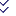

Editor Pane Toolbar
When an Editor pane is active, the toolbar appears as below.
{kind=link}
| Icon | Command | Description/Comment |
|---|---|---|
 |
Execute/Stop toggle | Execute or stop cycling; see the “Toolbar” topic for more information. |
| New… | Open a new data file in a new Editor pane. | |
 |
Open… | Call a dialog allowing the user to specify a data file to open. |
 |
Save… | Save the active data file. |
 |
Close | Close the active data file. |
| Undo | Undo the previous operation. | |
| Redo | Perform the previous operation again. | |
| Find… | Open a Find dialog that allows the user to specify text to search for in the current file. | |
| Find selection | Find the next instance of the currently selected text. | |
| Find again | Search for the next instance of the text that was most recently specified in the Find dialog. | |
| Replace… | Open a Replace dialog that allows the user to specify a global replacement operation (i.e., find all instances of A and replace with B ). | |
| Go to… | Open a dialog that allows the user to specify a line number to move to in the current file. | |
| Comment selection | Comment the selected text (on a line-by-line basis, if more than one line is selected). | |
| Uncomment selection | Uncomment the selected text (on a line-by-line basis, if more than one line is selected). | |
 |
Run Selection | Execute the current selection only. |
 |
Editor Options… | Open the Options dialog to the Editor page. |
|  | Local Options | Pull-down menu to switch off/on the Local Options: Line Numbers, Code Folding, Indentation Guides, Syntax Highlighting, and Word Wrap. See the topic on Local Options for details. |
| Command help… | Open Help to the definition of the command on the current line. | |
 |
Show/Hide Control Panel | Toggle Control Panel display; see the “Toolbar” topic. |
 |
Control Sets | Pick control sets to display/hide; see the “Toolbar” topic. |
The Right-Click Menu in the Editor Pane
The following commands are available in the pane on a pop-up context menu. The commands are enabled/disabled as appropriate to the current context (i.e., whether text is selected, whether there are commands stored on the undo/redo stack, etc.).
{kind=link}
| Undo - Undo the previous operation. |
| Redo - Perform (again) the most recently “undone” operation. |
| Cut - Delete the selected text and place it on the clipboard. |
| Copy - Copy the selected text to the clipboard. |
| Paste - Insert the text on the clipboard to the current cursor location. |
| Delete - Delete the selected text. |
| Select All - Select all text in the pane. |
| Find… - Open the Find dialog. |
| Find Selection - Find the next instance of the currently selected text. |
| Find Next - Find the next instance of the text that was input in the Find dialog. |
| Replace… - Open the Replace dialog. |
| Go to Line… - Open the Go To Line dialog; enter a number to go to that line. |
| Go to Token… - Open the Go To Token dialog; enter a number to go to the token at that position in the current line. |
| Block comment - Comment the selected text (on a line-by-line basis, if more than one line is selected). |
| Block uncomment - Uncomment the selected text (on a line-by-line basis, if more than one line is selected). |
Help (F1) - Open the Help file to the definition of the command on the current line. |
| Run Selection - Execute the current selection only. |
| Execute - This command is the same as the “Execute/Stop” command toggle on the toolbar. Use it to start or stop executing all of the current file. |
| Was this helpful? ... | UDEC © 2018, Itasca | Updated: Mar 15, 2024 |